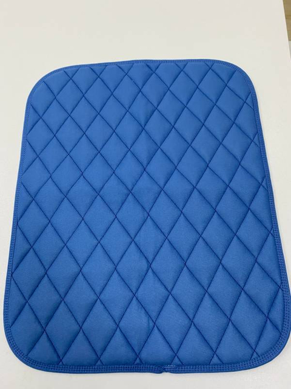

Disposable bed pads — often called underpads, chux pads, or absorbent pads — are one of the most frequently used consumable products in healthcare settings. They serve a remarkably broad range of clinical and caregiving functions: protecting mattresses and furniture from incontinence, providing a clean surface for wound care and procedural dressing changes, absorbing spills during feeding or medication administration, and maintaining patient dignity during personal care routines.
For procurement managers, infection prevention committees, and facility administrators, selecting the right bed pad involves balancing absorbency requirements, patient comfort, cost per unit, and waste management considerations. Understanding the construction options, performance ratings, and clinical use cases is essential for making informed purchasing decisions that serve both patients and budgets.
Why Disposable Bed Pads Are Indispensable in Modern Healthcare
Bed pads may seem like a simple product, but their role in clinical care is significant and multifaceted:
- Incontinence management. Urinary and faecal incontinence affect a substantial proportion of hospital inpatients, nursing home residents, and home care recipients. Bed pads provide a first line of protection for mattresses, chairs, wheelchairs, and stretchers, preventing costly damage and reducing the frequency of linen changes.
- Wound care and procedural support. Nurses place bed pads beneath patients during dressing changes, catheterisation, and other procedures where fluid exposure is anticipated. They create a clean, absorbent barrier between the procedure site and the underlying surface.
- Infection control. Single-use bed pads eliminate the risk of cross-contamination associated with reusable alternatives. After each use, the pad is discarded with clinical waste, removing a potential vector for pathogen transmission.
- Staff efficiency. Changing a disposable bed pad takes seconds compared to stripping, transporting, laundering, and replacing reusable linen. In high-turnover environments such as emergency departments and post-operative wards, this time saving is operationally significant.
- Patient dignity and comfort. Well-designed bed pads with soft non-woven topsheets feel comfortable against the skin and help maintain patient dignity during incontinence episodes. Patients who know they are protected experience less anxiety and sleep better.
Construction and Materials
A quality disposable bed pad is a multi-layer engineered product. Each layer serves a specific function:
Top Sheet (Facing Layer)
The top sheet is the layer that contacts the patient's skin or clothing. Materials include:
- Non-woven spunlace or airlaid fabric. This is the premium choice. Spunlace offers a soft, cloth-like feel that is gentle on fragile skin. Airlaid provides good absorbency at a lower cost. Both materials allow rapid fluid passage to the absorbent core while maintaining a dry surface feel.
- Tissue paper. An economical option that provides adequate fluid transfer at a lower price point. Tissue-facing pads are suitable for light-to-moderate absorbency applications and budget-conscious procurement, though they may feel less comfortable against bare skin.
- Perforated film. Some pads use a perforated polyethylene film as the top layer. This provides excellent fluid strike-through but can feel less comfortable than non-woven options. It is typically used in veterinary or industrial settings rather than patient-facing clinical applications.
Absorbent Core
The core is the functional heart of the bed pad. It determines absorbency capacity, retention capability, and fluid distribution:
- Fluff pulp (cellulose). Wood pulp fluff is the standard absorbent material. It is inexpensive, highly absorbent, and biodegradable. Most healthcare bed pads use fluff pulp as the primary absorbent component.
- Super absorbent polymer (SAP). SAP particles are often blended with fluff pulp to dramatically increase absorbency and fluid retention capacity. SAP can absorb and lock away many times its own weight in liquid, significantly reducing the risk of leakage and skin maceration. Pads with SAP content are essential for heavy incontinence applications.
- Tissue wrap. A thin tissue layer typically encases the absorbent core, preventing fluff pulp from dispersing during handling and use while maintaining fluid permeability.
Back Sheet (Barrier Layer)
The back sheet prevents fluid from passing through to the underlying surface:
- PE (polyethylene) film. The standard waterproof barrier. Available in blue, white, or green, PE film is impermeable to liquids and provides reliable protection for mattresses and furniture.
- Biodegradable film. An emerging alternative for environmentally conscious facilities. Biodegradable PE films offer comparable waterproof performance while reducing landfill persistence. These are increasingly available from progressive manufacturers.
Absorbency Ratings and Sizing
Bed pads are typically classified by absorbency level and physical dimensions. Standard industry conventions include:
| Absorbency Level | Typical Capacity | Best Use Cases |
|---|---|---|
| Light | 300-500 ml | Light urinary incontinence, procedural drips, infant care |
| Moderate | 500-900 ml | Moderate incontinence, post-operative care, wound dressing changes |
| Heavy / Extra Heavy | 900-1,500+ ml | Heavy incontinence, overnight use, ICU, bedbound patients |
| Common Size | Dimensions (cm) | Typical Application |
|---|---|---|
| Small | 40 × 60 | Chair protection, infant pads, targeted wound care |
| Medium | 60 × 60 | Wheelchair seats, examination tables, pet care |
| Standard | 60 × 90 | Standard hospital beds, most common universal size |
| Large | 90 × 120 | Extra-wide beds, operating tables, full-body coverage |
Selecting the correct size and absorbency level for each clinical application is critical. Using an under-specified pad leads to leakage, skin maceration, and patient discomfort. Over-specifying increases unit costs and waste volume unnecessarily. A well-managed facility typically stocks two or three sizes and absorbency levels, deploying each where clinically appropriate.
Clinical Applications Beyond Incontinence
While incontinence care is the primary use case, disposable bed pads serve a surprisingly diverse range of clinical purposes:
- Wound care and dressing changes. Bed pads provide a clean, absorbent surface beneath wounds during debridement, dressing application, and wound assessment. They absorb exudate and irrigation fluids, keeping the surrounding environment clean.
- Surgical and procedural use. In minor procedure rooms, bed pads protect examination tables from blood, irrigation solutions, and antiseptic preparations. They are placed beneath patients during cystoscopy, catheterisation, and other urological procedures.
- Maternity and postpartum care. Bed pads are used during labour, postpartum recovery, and breastfeeding support to manage lochia and milk leakage. Soft non-woven facing is particularly important for patient comfort in these sensitive situations.
- Elderly and long-term care. In nursing homes and assisted living facilities, bed pads are used on beds, chairs, wheelchairs, and commodes. They are a core component of dignity-preserving care for residents with mobility limitations or cognitive impairment.
- Home care and personal use. Family carers managing bedbound or incontinent relatives at home rely on disposable bed pads to protect mattresses, reduce laundry burden, and maintain a hygienic sleeping environment.
- Veterinary care. Veterinary clinics use bed pads on examination tables, recovery cages, and kennels. This is a significant secondary market for disposable pad manufacturers.
Infection Control and Skin Health
The infection control and skin health implications of bed pad selection are often overlooked but clinically important:
- Skin maceration prevention. Prolonged exposure of skin to moisture softens the stratum corneum and makes it susceptible to breakdown, pressure ulcers, and opportunistic infection. High-quality bed pads with SAP content rapidly absorb and lock away moisture, keeping the skin surface drier for longer.
- Single-use hygiene. Unlike reusable fabric pads, disposable bed pads are used once and discarded. This eliminates the risk of residual contamination between patients and removes a step from the contaminated linen handling process.
- Reduced laundering cross-contamination. Reusable pads require sorting, transport, washing, and drying — each step a potential cross-contamination point. Disposable pads remove this pathway entirely.
- Quick-change capability. When an incontinence episode occurs, staff can quickly remove and replace a disposable bed pad without stripping the entire bed. This minimises the time the patient spends on a soiled surface and reduces the area of contamination.
"In our 180-bed nursing home, we transitioned from reusable fabric pads to SAP-enhanced disposable bed pads across all resident rooms. The reduction in linen processing costs, combined with fewer pressure ulcer incidents and improved resident satisfaction scores, made the transition self-funding within six months." — Care Home Manager, UK
Quality Standards and Testing
When evaluating disposable bed pad suppliers, verify the following quality indicators:
- Absorbency testing. Reputable manufacturers test and report the actual fluid absorbency capacity (in millilitres) of each product. Request test data and compare against your clinical requirements.
- Strike-through resistance. The back sheet should be tested for fluid penetration resistance. A quality pad will show zero strike-through even at maximum absorbency capacity.
- Tensile strength. The pad should resist tearing during handling, placement, and patient movement. Weak pads that tear in use create additional mess and waste.
- ISO 13485 quality management. Manufacturers operating under ISO 13485 demonstrate consistent production standards, batch traceability, and post-market surveillance capabilities.
- Biocompatibility. For pads that contact skin directly, ISO 10993 biocompatibility testing (cytotoxicity, skin irritation, sensitisation) provides assurance of patient safety.
- Batch consistency. Inconsistent absorbency between batches is a common quality issue with low-cost suppliers. Request batch-to-batch test variability data if available.
Environmental Considerations
The environmental impact of disposable bed pads is a growing concern for healthcare facilities with sustainability commitments:
- Biodegradable options. Some manufacturers now offer bed pads with biodegradable PE back sheets and sustainably sourced fluff pulp. While the SAP component remains synthetic, the overall environmental footprint is reduced.
- Reduced packaging. Inquire about bulk-pack options that minimise individual wrapping and reduce packaging waste per pad.
- Life-cycle comparison. While disposable pads create single-use waste, the water, energy, and chemical consumption associated with laundering reusable pads is substantial. A full life-cycle assessment (LCA) may reveal that high-quality disposables have a comparable or even lower environmental impact than reusables when laundering is factored in.
Procurement Best Practices
- Map clinical requirements by department. Different departments have different absorbency and sizing needs. Maternity wards need soft, comfortable pads for patient-facing use. ICU and surgical wards need heavy-absorbency pads. General wards may be well-served by moderate-absorbency pads. Stocking the right mix reduces waste and cost.
- Request samples and conduct clinical trials. Have nursing staff trial different pad constructions, sizes, and absorbency levels in real-world conditions. Staff feedback on softness, absorbency speed, and ease of handling is invaluable for product selection.
- Calculate cost per use, not per pad. A slightly more expensive pad that prevents leakage and mattress damage is more cost-effective than a cheap pad that requires double-layering or frequent changes. Include the cost of mattress replacement and linen processing in your total cost analysis.
- Evaluate packaging and storage. Bed pads are bulky. Assess your storage capacity and the packaging format (individually wrapped vs. bulk-pack). Individually wrapped pads are ideal for emergency kits and home-care supply packs but generate more packaging waste.
- Maintain dual sourcing. As with all essential healthcare consumables, qualify at least two suppliers to mitigate supply chain disruption risk. The COVID-19 pandemic demonstrated the critical importance of diversified sourcing for medical consumables.
Why Choose Newrise Medical
Newrise Medical manufactures and supplies a comprehensive range of disposable bed pads for healthcare, elderly care, and veterinary applications. Our product line includes light-absorbency pads with tissue or non-woven facing for general ward use, moderate-absorbency pads with fluff pulp core for standard incontinence and procedural applications, and heavy-absorbency pads with SAP-enhanced cores for ICU, overnight, and heavy incontinence use. All sizes from 40 × 60 cm to 90 × 120 cm are available.
Our bed pads are manufactured under ISO 13485 certified quality management systems, ensuring consistent absorbency performance, reliable barrier protection, and full batch traceability. We offer OEM and ODM options for distributors, including custom sizing, absorbency levels, top sheet materials, packaging formats, and private-labelling. Whether you need standard 60 × 90 cm pads for hospital procurement or specialised sizes for veterinary or home-care markets, Newrise Medical provides competitive pricing, flexible minimum order quantities, and responsive technical support to buyers and distributors worldwide.